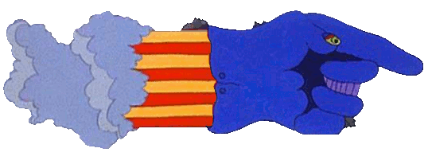
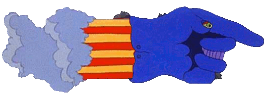

Once in a lifetime, something so rare is discovered. This is not it!
The three unwise men, Mr. Moonlight, Mr. Mustard & Jeremy Boob, shamelessly present "Carnival Of Light" - fakes, frauds, and phonies.
Yes, the circus is in town!! You'll laugh, you'll cry, you'll cringe!
Step right up - gather 'round all you clowns! The show is about to begin.
What would you pay for this rarity - twenty, thirty, maybe, forty dollars, euros, pounds, or Canadian Tire money? No, you'll pay what it's worth - absolutely nothing!!!
The LSD was flowing free,
The day they laid this down.
Paul had found a Wall of Sound
To play in London Town.....
A Million Volts or so they said
Would burn it's way into your head.
A Light Show, Sound Rave for the crowd
The music played..and it was LOUD !
A memory now, a distant past
A shame our childhood could not last.
And locked away, very tight
That music...Carnival of Light.
Promises they come and go
But Carnival it did not show.
The only tracks to appear Are fakes that quietly disappear.
So we have gathered them for you,
A very odd and different view.
And although we know that they're not right
We give to you these rays of Light.
Mr. Moonlight
Geoff Emerick...
"It was really just noise and cacophony, not a proper song." (2006)
Barry Miles...
"The tape has no rhythm, though a beat is sometimes established for a few bars by the percussion or a rhythmic pounding on the piano. There is no melody, though snatches of a tune sometimes threaten to break through. " (1997)
Paul McCartney...
"'I like it because it's the Beatles free, going off piste." (2005)
John Lennon...
"Barcelona!" (1967)
George Harrison...
"avant garde a clue" (1995)
Ringo Starr...
"This is Rubbish " (1994)
John Wilson...
"It will help reaffirm McCartney's claim to have been the most musically adventurous of all the Beatles" (2008)
George Martin…
"Oh God No!!!!" (1967)